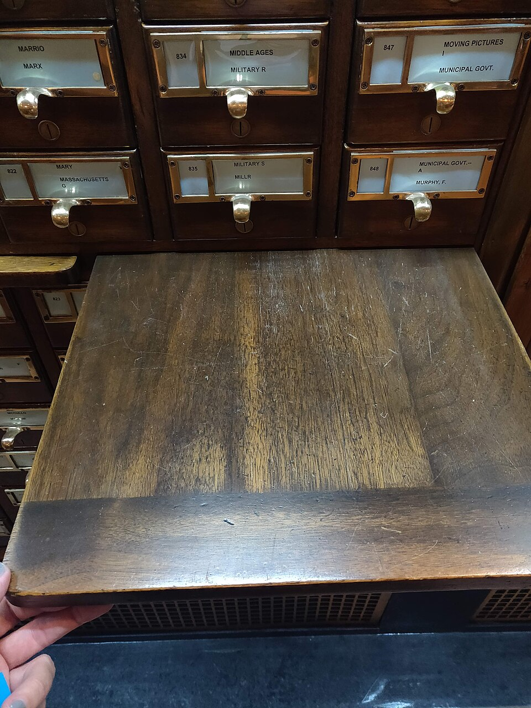

Módulo 05 — Listas y Keys
El 80% de las UI muestran listas: productos, tareas, comentarios, mensajes. React renderiza listas con.map()+ una prop especial llamadakey.
1. Renderizar un array con .map()

function ListaFrutas() {
const frutas = ['Manzana', 'Pera', 'Uva'];
return (
<ul>
{frutas.map(fruta => (
<li key={fruta}>{fruta}</li>
))}
</ul>
);
}frutas.map(...)devuelve un array de JSX:[<li>Manzana</li>, <li>Pera</li>, <li>Uva</li>].- React acepta arrays de JSX como children — los renderiza en orden.
- El atributo
keyes obligatorio en el elemento raíz devuelto por el callback.
2. ¿Qué son las keys y por qué importan?
- Deben ser únicas entre hermanos (no globalmente).
- Deben ser estables (no cambian entre renders).
- NUNCA usar el index del array si la lista puede reordenarse, agregar o quitar items.
3. Buenas vs malas keys
| Mala key | Buena key | Por qué |
|---|---|---|
key={index} | key={item.id} | El index cambia al reordenar |
key={Math.random()} | id estable | Random cambia en cada render |
key={Date.now()} | id del item | Distinto en cada render |
| (omitir key) | key={algo} | Warning + bugs sutiles |
4. ¿De dónde sale el id?
posts.map(post => <Post key={post.id} {...post} />)function agregarTarea(texto) {
setTareas(prev => [...prev, {
id: crypto.randomUUID(), // ⭐ moderno y disponible en browser
texto,
hecha: false
}]);
}const dias = ['Lunes', 'Martes', 'Miércoles'];
dias.map(dia => <li key={dia}>{dia}</li>)['Foo', 'Foo'] con key={item} = warning de key duplicada.5. ¿Por qué index es mala key?
{tareas.map((t, i) => (
<li key={i}>
<input defaultValue={t.texto} />
</li>
))}- Tarea[1] (index 1) pasa a estar en index 0.
- React ve "la key 0 sigue ahí" pero ahora con datos distintos.
- El input no se "desmonta" — sigue mostrando el texto VIEJO.
key={t.id}, React sabe que el item con id-A se fue y el item con id-B sigue ahí. Reorganiza correctamente.
6. Listas filtradas y transformadas
function ProductosDestacados({ productos }) {
return (
<ul>
{productos
.filter(p => p.destacado)
.sort((a, b) => b.rating - a.rating)
.map(p => (
<li key={p.id}>{p.nombre} ⭐ {p.rating}</li>
))
}
</ul>
);
}filter → sort → map es idiomático. No mutes el array original — los métodos como sort y reverse mutan. Si la lista viene de props, copiá primero: [...productos].sort(...).7. Listas vacías y estado de carga
function Posts({ posts, cargando }) {
if (cargando) return <p>Cargando...</p>;
if (posts.length === 0) return <p>No hay posts aún.</p>;
return (
<ul>
{posts.map(p => <li key={p.id}>{p.titulo}</li>)}
</ul>
);
}8. Conditional rendering
| Patrón | Cuándo usar |
|---|---|
{cond && <X />} | Mostrar o nada |
{cond ? <X /> : <Y />} | Mostrar X o Y |
if (cond) return ... al inicio | Early return (carga, error) |
| Variable de JSX previa | Lógica compleja antes del return |
// && — falsy values gotcha
{usuarios.length && <p>{usuarios.length} usuarios</p>}
// Si length=0, renderiza "0" (no nada). Usar comparación explícita:
{usuarios.length > 0 && <p>{usuarios.length} usuarios</p>}{count && ...}. Si count es 0, React renderiza "0" como texto. SIEMPRE compará: {count > 0 && ...} o {!!count && ...}.9. Componente por item
Cuando el JSX del item es complejo, extraé un componente:
function Tarea({ tarea, onToggle, onDelete }) {
return (
<li className={tarea.hecha ? 'hecha' : ''}>
<input
type="checkbox"
checked={tarea.hecha}
onChange={() => onToggle(tarea.id)}
/>
<span>{tarea.texto}</span>
<button onClick={() => onDelete(tarea.id)}>❌</button>
</li>
);
}
function ListaTareas({ tareas, onToggle, onDelete }) {
return (
<ul>
{tareas.map(t => (
<Tarea
key={t.id}
tarea={t}
onToggle={onToggle}
onDelete={onDelete}
/>
))}
</ul>
);
}key va en el ELEMENTO RAÍZ del callback, no dentro del componente Tarea. Lo aplica el padre.10. Fragments con key
Si tu item es un fragment de varios elementos, necesitás usar React.Fragment explícito (con key):
{items.map(item => (
<React.Fragment key={item.id}>
<dt>{item.label}</dt>
<dd>{item.value}</dd>
</React.Fragment>
))}El shorthand <>...</> NO acepta key. Hay que usar el largo.
11. Listas anidadas
function Categorias({ categorias }) {
return (
<>
{categorias.map(cat => (
<div key={cat.id}>
<h2>{cat.nombre}</h2>
<ul>
{cat.productos.map(p => (
<li key={p.id}>{p.nombre}</li>
))}
</ul>
</div>
))}
</>
);
}12. Reconciliation — cómo React usa las keys
Cuando una lista cambia, React:
- Compara las keys de la lista nueva con las viejas.
- Si una key existe en ambas → reutiliza el componente, actualiza props.
- Si una key apareció → monta nuevo componente.
- Si una key desapareció → desmonta.
Por eso keys estables son cruciales: cambiar la key = "desmontar y montar" = perder estado interno, re-ejecutar effects, perder foco del input, perder scroll.
13. Mini-ejemplo: filtro de búsqueda
function BuscadorProductos() {
const [busqueda, setBusqueda] = useState('');
const productos = [
{ id: 1, nombre: 'iPhone 16' },
{ id: 2, nombre: 'iPad Pro' },
{ id: 3, nombre: 'MacBook Air' },
{ id: 4, nombre: 'Watch Ultra' },
];
const filtrados = productos.filter(p =>
p.nombre.toLowerCase().includes(busqueda.toLowerCase())
);
return (
<>
<input
placeholder="Buscar..."
value={busqueda}
onChange={(e) => setBusqueda(e.target.value)}
/>
{filtrados.length === 0 ? (
<p>Sin resultados para "{busqueda}"</p>
) : (
<ul>
{filtrados.map(p => (
<li key={p.id}>{p.nombre}</li>
))}
</ul>
)}
</>
);
}14. Errores típicos
{items.map((item, i) => <X key={i} ... />)} en listas que se reordenan. Bugs sutiles con estado de inputs hijos.<Componente><div key=...>...</div></Componente> — la key va en el ELEMENTO RAÍZ devuelto por el .map(), no dentro de un wrapper.productos.sort(...) muta. Como vienen de props/estado, eso es bug. Usá [...productos].sort(...).&&: {count && ...} renderiza "0" si count=0. Compará explícito: {count > 0 && ...}.{user} falla. Hay que renderizar propiedades: {user.nombre}.15. Ejercicios
- Renderizar una lista de 10 usuarios con id, nombre y email.
- Toggle "mostrar/ocultar" cada item al click.
- Filtro por nombre: input que filtra la lista.
- Sort: 2 botones "ordenar por nombre" / "ordenar por edad" (sin mutar).
- Paginación: mostrar 5 items por página con botones prev/next.
- Lista anidada: categorías con productos adentro.
✅ Checkpoint
1. ¿Por qué necesitamos keys en listas?
React usa keys para identificar qué items son los mismos entre renders consecutivos. Sin keys (o con keys malas), React no sabe si reusar o recrear componentes, lo que causa bugs con estado interno, focus, scroll, animaciones.
2. ¿Por qué NO usar el index como key?
Si la lista puede reordenarse, agregar items al principio o eliminar, los índices cambian para los mismos datos. React reusará componentes con datos viejos. Usar id estable es la única forma correcta cuando la lista muta.
3. ¿Dónde generar el id si no viene del backend?
Al CREAR el item, no al renderizar. Usá crypto.randomUUID() (disponible en browser moderno) o un contador. NUNCA Math.random() dentro del map — eso cambia en cada render.
4. ¿Qué bug típico causa {count && <X />}?
Si count es 0 (falsy pero numérico), React renderiza "0" como texto en lugar de no renderizar nada. Solución: comparar explícito (count > 0 &&) o convertir a boolean (!!count &&).
5. ¿Diferencia entre key duplicada y key faltante?
Faltante: warning, React igual renderiza pero sin optimizaciones. Duplicada: warning + bugs reales — React puede confundirse al reconciliar y mostrar contenido incorrecto. Ambos son problemas; key duplicada es peor.
6. ¿Qué pasa al cambiar la key de un elemento?
React lo trata como un componente nuevo: desmonta el viejo (perdiendo su estado interno, ejecutando cleanups) y monta el nuevo. Es un truco útil cuando QUERÉS resetear estado (ej: cambiar la key del form para limpiarlo).